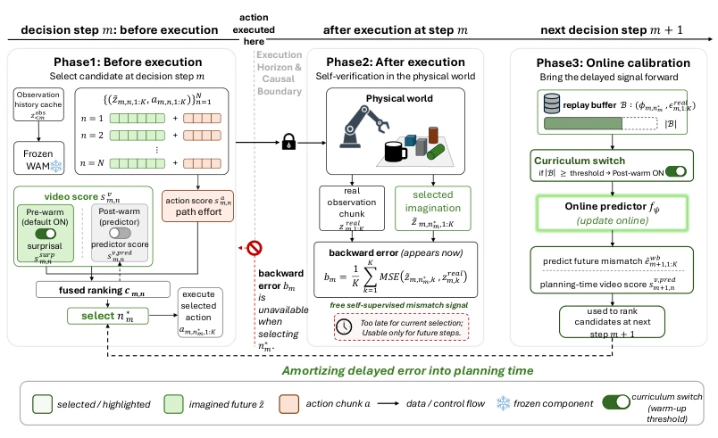
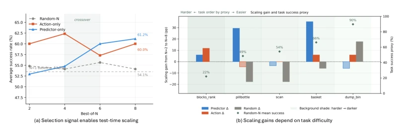

Figure 1: Pilot motivation: WAM imagination contains selectable reliability variation. A frozen WAM samples multiple future–action candidates from the same causal history, and each imagined visual future is scored in hindsight by its latent-space imagination–reality error after the real future becomes available. (a) Under the same observation prefix, candidates can differ sharply in hindsight error; green marks the lowest-error candidate, brown the highest, and gray the remainder. (b) The within-prefix spread appears across tasks, measured by the median and 90th-percentile oracle error spread over prefixes. (c) Reliability-aware candidate selection is applied before execution, and self-supervised mismatch feedback is given after execution. Implementation details are provided in Appendix ??
Figure 2: Internal generative signals for test-time candidate selection. (a) From the same cache state Cm, the frozen WAM samples multiple video–action candidates through stochastic conditional flows. (b) Positive divergence in the oriented source-to-data coordinate τ = 1 −σ corresponds to outward probability flux and local density decrease. (c) Accumulating divergence along the saved video solver trajectory yields the video-side surprisal score sv,surp m,n . (d) Given an imagined future, the action branch decodes the corresponding action chunk; path effort sa m,n measures normalized denoising motion in action space.

Figure 3: Method overview of WCD. At each decision step m, the frozen WAM samples N future– action candidates and selects one via pre-execution internal signals (Phase 1). After execution, the realized observation zreal m,1:K audits the selected imagination, yielding a self-supervised backward error bm that is reliable but causally delayed (Phase 2). WCD accumulates these mismatch labels in a replay buffer to train an online predictor fψ, amortizing the delayed signal into a planning-time video score sv,pred m+1,n for future candidate ranking (Phase 3).
Figure 5: Early imagination–reality mismatch is associated with rollout failure. We aggregate task- and depth-normalized visual-back error over the first three executed chunks. Failure rate increases from 4.9% in the lowest early-error quartile to 21.2% in the highest.

Figure 6: Test-time scaling requires structured selection. (a) More candidates improve success only when paired with reliable selection. (b) Scaling gains concentrate on tasks with remaining headroom.